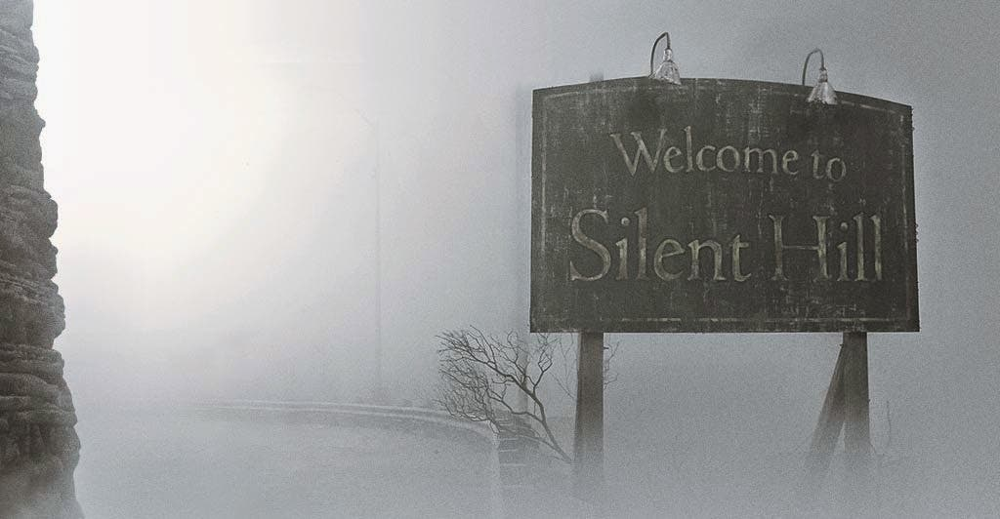

-
Silent-Hill es un videojuego de horror de supervivencia publicado por Konami y desarrollado por Team Silent, un grupo de Konami Computer Entertainment Tokyo. Fue lanzado para PlayStation en Norteamérica en enero de 1999, y en Japón y Europa más tarde ese mismo año. Silent Hill emplea una cámara en tercera persona y entornos tridimensionales en tiempo real; los desarrolladores usaron niebla y oscuridad para disfrazar las limitaciones del hardware. Asimismo, la obra presenta como protagonista a un personaje sin cualidades o destreza física destacables, en contraste con títulos anteriores del género.
-
Silent Hill: Homecoming es la sexta entrega de la serie de videojuegos de horror de supervivencia Silent Hill, desarrollado por Double Helix Games. El juego se anunció el 11 de julio de 2007 en la conferencia de prensa de Konami en la E3, y se tituló en un principio «Silent Hill V». Esta entrega sigue el viaje de Alex Shepherd, un soldado que vuelve de la guerra a su ciudad natal, Shepherd's Glen, donde se da cuenta de que su hermano está desaparecido y que el pueblo está sumido en el caos. Mientras continúa buscando a su hermano menor, él descubre más sobre la Orden (el culto de Silent Hill), así como de la historia del pueblo y su propio pasado
-
Silent Hill da referencia a muchos elementos del mundo real. Los miembros del equipo de desarrolladores Team Silent son fanáticos de películas, literatura, música y arte. Así como hacían referencia a sus favoritos, también los usaron para crear la historia y atmósfera del juego, la cual querían que fuera de estilo occidental.Por ejemplo, el apellido del personaje Lisa Garland es el mismo que el de la actriz Judy Garland; el nombre de Cheryl Mason está basado en la actriz Sheryl Lee, de Twin Peaks; Michael Kaufmann es una combinación de los productores de Troma Studios Lloyd Kaufmann y Michael Herz; y tanto Alessa (originalmente llamada Asia) y Dahlia (originalmente llamada Daria) son nombres derivados de la hija y exesposa del director italiano Dario Argento. Asimismo, los nombres originales de Harry y Cheryl, Humbert y Dolores, eran los nombres de los personajes principales de la novela Lolita.
